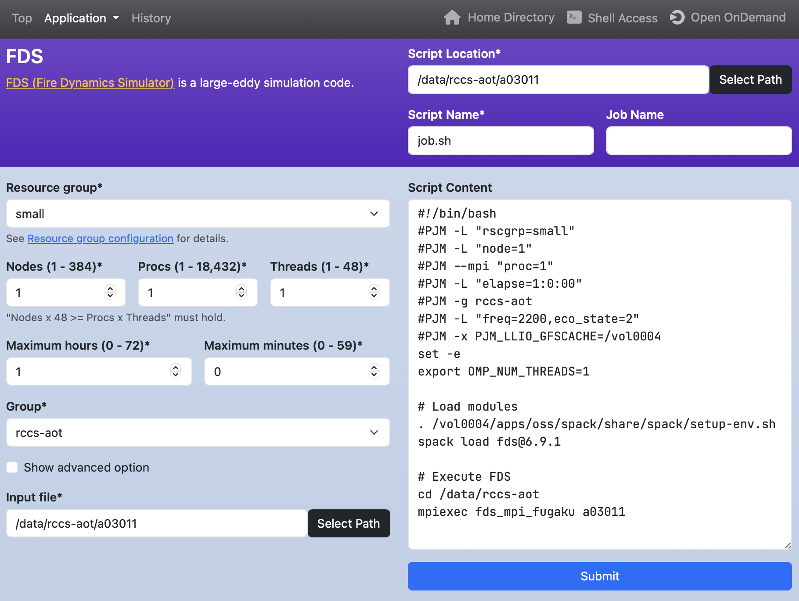
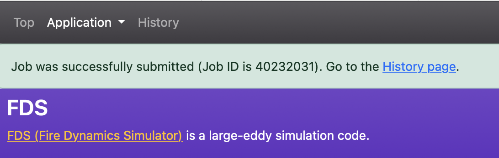
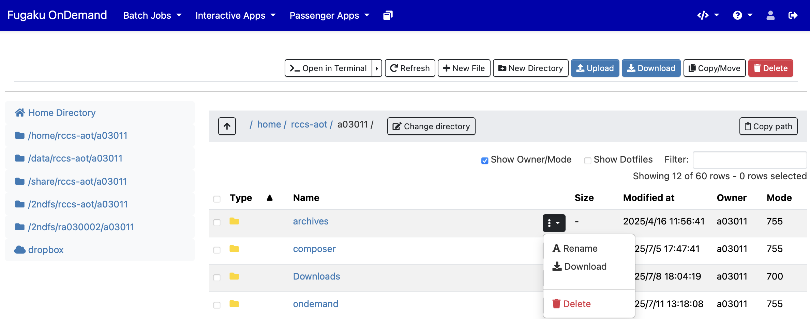

4. Batch Jobs
A batch job is a computing task executed non-interactively by a job scheduler.
Batch jobs are written in shell scripts, and the required computing resources (such as the number of nodes or maximum runtime) are explicitly specified using job scheduler directives (e.g., #SBATCH -N 4).
In Fugaku Open OnDemand, we use an application running on Open OnDemand called Open Composer,
and provide templates for the following batch jobs.
| Category | Application |
|---|---|
| Climate | SCALE |
| Computer Aided Engineering | FDS, FFVHC-ACE, FrontFlow (blue/X), FrontISTR, OpenFOAM (Foundation/OpenCFD) |
| Condensed Matter Physics | ALAMODE, AkaiKKR, HΦ, mVMC, OpenMX, PHASE/0, Quantum Espresso, SALMON |
| Experimental Data Processing | KIERTÄÄ |
| Molecular Dynamics | GENESIS, GROMACS, LAMMPS, MODYLAS, PIMD |
| Quantum Chemistry | ABINIT-MP, Gaussian, NTChem, SMASH |
| Quantum Simulation | braket |
| Other | Fujitsu TCS, Slurm |
As an example, here is how to use FDS (Fire Dynamics Simulator). From the menu bar, select "Batch Jobs" → "FDS".

A web form for generating a job script will appear. The top-right fields are common across applications: "Script Location" specifies where the script will be saved, "Script Name" is the file name, and "Job Name" is an optional job title. The lower-left section contains application-specific inputs, which automatically update the job script preview on the lower right. After filling in the form, click "Submit" to submit the job to Fugaku.
If the job is successfully submitted, click the link to the "History page" that appears near the top.
On the History page, you can view past job submissions. Each row in the table represents one job entry.
The "Cancel Job" and "Delete Info" buttons at the top-left are used to cancel a running job or delete a job entry from the table, respectively. To use these buttons, check the checkbox in the leftmost column of the job row.
The text input and radio buttons at the top-right are used to filter jobs shown in the table. Entering text in the "Filter" field narrows the list to jobs that include that text. The "All", "Running", "Queued", and "Completed" radio buttons filter by job status. The "Fugaku" and "Prepost" radio buttons filter jobs by system.

Clicking the link in the "Job ID" column shows profiling data retrieved from the job scheduler.

Clicking the link in the "Application" column opens the application page. The icon next to it represents visualization applications registered in Open OnDemand; clicking it launches a web form for that application.
Clicking the link in the "Script Location" column opens the Open OnDemand Home Directory. Clicking the terminal icon next to it opens the Shell Access.

Clicking the link in the "Script Name" column opens a window showing the contents of the submitted shell script. Clicking the "Load Parameters" button in that window opens the application page with the parameters loaded.